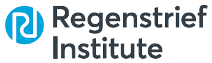
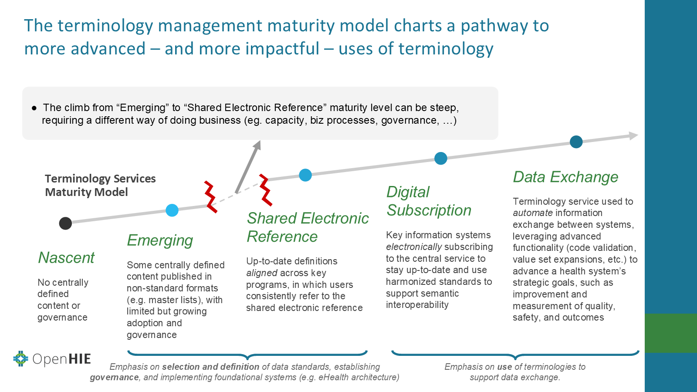

Terminology Management and Terminology Services
GF South Africa · DHU Lunch & Learn series
Friday, 7 August 2026 · DHU Lunch & Learn
Where We Left Off
Client Registry
Facility Registry
Health Worker Reg.
Terminology Service
Today's throughline: what happens inside the Terminology Service box — both what it technically does, and the governance behind it.
Speaker notes ▾
Connected — But Not Understood
A patient is diagnosed at a clinic. The record is sent, successfully, to a national data platform.
✓ Transaction succeeded. No error, no rejection.
Source: a real national terminology programme's own account of this exact failure mode, 2026. Codes shown are illustrative — real, valid ICD-10 codes chosen to fit the pattern described, not the literal codes from the original incident.
Did Anything Break?
Nothing errors out. The systems are connected, and the message arrives — but the meaning didn't survive the trip.
That's the gap this whole session is about closing.
Speaker notes ▾
Terminology vs. Terminology Service
Terminology
The content — a set of codes and meanings. LOINC, ICD-10, or a local code system are all terminologies.
Terminology Service
The software that makes that content queryable and keeps it in sync with the systems using it.
This distinction is the spine of the whole session — everything else today is either about the content, or about the service that manages it.
What Does a Terminology Service Actually Do?
Other systems ask it questions, in real time:
A terminology service isn't a static list — it's a live service other systems query constantly.
Speaker notes ▾
Governing Codes Over Time
Someone has to own an ongoing set of decisions:
Four Terminologies, Each With a Best Lane
That overlap is exactly why a country needs more than one — and why mapping between them is what makes a single patient's data comparable across facilities, provinces, and national reports.
Speaker notes ▾
Localizing Doesn't Always Mean Shrinking It
Taiwan's national disease-surveillance programme didn't load all 100,000+ LOINC codes — it mapped local lab results to just the codes needed for notifiable-disease reporting, then rolled that subset into its national electronic lab reporting system.
The US went the opposite direction with ICD-10: ICD-10-CM keeps every WHO category but adds far more granular, US-specific codes on top — nearly five times as many.
Either way, a country selects and governs its own version of a global standard — sometimes that means narrowing it to a relevant subset, sometimes it means extending it with local detail the global classification didn't anticipate.
Speaker notes ▾
Meet Nomsa
Nomsa, 34, is on ART at her district's primary clinic. She's later admitted to the district hospital with a new TB diagnosis.
| Step | Standard terminology | Illustrative code | Local/facility code in parallel use |
|---|---|---|---|
| Clinic — HIV diagnosis | ICD-10 | B20 | Paper register: free-text "HIV+" |
| Clinic — clinical concept | SNOMED CT / GPS | 86406008 — HIV infection | — |
| Clinic — CD4/viral load result | LOINC | 20447-9 — HIV 1 RNA [#/volume] (viral load) in Serum or Plasma by NAA with probe detection | EMR field "VL result," not mapped to LOINC |
| Clinic — ART regimen | WHO-ATC | J05AR27 — lamivudine, tenofovir disoproxil and dolutegravir (TLD) | Shorthand "Regimen 1a" |
| Hospital — new TB diagnosis | ICD-10 | A15.0 | Hospital's own GeneXpert lab-order code |
Fabricated patient and facilities — but the standard-terminology codes above are real, publicly documented codes (see speaker notes for sources), not placeholders. Only the "local/facility" column is invented.
Speaker notes ▾
What Happens When Nomsa Is Referred?
Without governed mapping between local shorthand and global codes, her data can't reliably follow her — and it can't be aggregated into a provincial or national report either.
Four Building Blocks of a Well-Governed System
All four reinforce each other. Technology without Governance has no rules to enforce; Content without Community has no source of shared standards to draw from. A well-governed national terminology system needs all four working together — not any one of them alone.
The Terminology Maturity Model

Most LMICs — and most provinces/programmes in this room — sit somewhere in the first two or three rungs. That's normal.
Is a Spreadsheet a Shared Electronic Reference?
A "master list" spreadsheet or PDF
Emerging — even a well-maintained one, if programmes keep their own separate copies and use it siloed, ad hoc.
Shared Electronic Reference
Programmes consistently refer back to one place as definitions change — that's the difference, not the file format.
If your programme already keeps a spreadsheet of standard codes — that's Emerging, and Emerging isn't nothing. It's a real, named step. The climb is in how consistently it gets used, not in making the file nicer.
Speaker notes ▾
Kenya: Harmonizing What Already Existed
Kenya didn't start from zero, and didn't discard what already existed — it reconciled two pre-existing local dictionaries into a shared one, then filled gaps with global standards. That's now a public Shared Electronic Reference: knhts.health.go.ke.
Speaker notes ▾
Localizing a Terminology: Two Directions
↓ Subsetting
Take global standards (SNOMED, ICD, LOINC) and select the slice that's locally relevant — Section 4.
↑ Harmonizing
Take what's already locally in use — like Nomsa's clinic and hospital shorthand — and reconcile it up into something nationally shared and governed.
Neither direction alone is sufficient. South Africa isn't starting from zero — Nomsa's shorthand codes are exactly the kind of pre-existing, unharmonized local terminology every country already has before it builds anything national.
Where Are You on the Ladder?
South Africa's Path and Points of Contact
What this section needs, once sourced:
- An inventory — even partial — of terminologies/code sets already in active use across provinces and programmes
- Who currently owns, or is expected to own, terminology governance and harmonization decisions in SA's DoH structure
- Whether SA has, or is building, anything like a shared electronic reference for any domain
- A named contact or channel for attendees who want to get involved
Speaker notes ▾
Knowledge Check
Priority questions:
- What terminologies — global and local — are already being used in your settings?
- Where does your own domain sit on the maturity ladder today, and what's the one governance decision that would move it up a rung?
Thank You
Today: what a terminology service does, how SNOMED CT/ICD-10/LOINC relate, how localization works in both directions, and the four building blocks of a well-governed national terminology system.